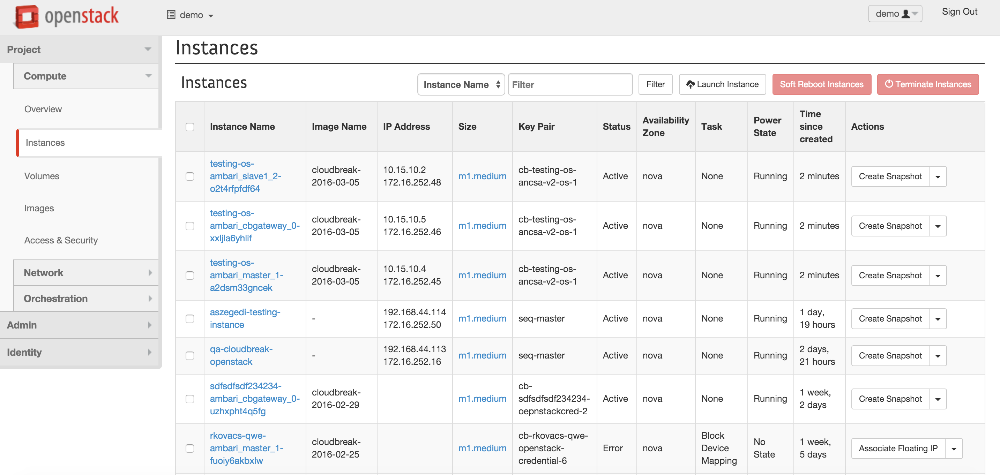

OpenStack Images
We have pre-built cloud images for OpenStack with the Cloudbreak Deployer pre-installed and with Cloudbreak pre-installed. Following steps will guide you through the launch of the images then the needed configuration.
Alternatively, instead of using the pre-built cloud image, you can install Cloudbreak Deployer on your own VM. See install the Cloudbreak Deployer for more information.
Please make sure you opened the following ports on your security group:
- SSH (22)
- Cloudbreak API (8080)
- Identity server (8089)
- Cloudbreak GUI (3000)
- User authentication (3001)
OpenStack Image Details
Cloudbreak Deployer image
Cloudbreak image
Import the image into your OpenStack
Cloudbreak Deployer import
export OS_IMAGE_NAME=<add_a_name_to_your_new_image>
export OS_USERNAME=<your_os_user_name>
export OS_AUTH_URL=<http://.../v2.0>
export OS_TENANT_NAME=<your_os_tenant_name>
Import the new image into your OpenStack:
glance image-create --name "$OS_IMAGE_NAME" --file "$CBD_LATEST_IMAGE" --disk-format qcow2 --container-format bare
--progress
Minimum and Recommended VM requirements: 8GB RAM, 10GB disk, 2 cores
 Full size here.
Full size here.
Cloudbreak import
export CB_LATEST_IMAGE_NAME=<file_name_of_the_above_cloudbreak_image>
export OS_USERNAME=<your_os_user_name>
export OS_AUTH_URL=<http://.../v2.0>
export OS_TENANT_NAME=<your_os_tenant_name>
Import the new image into your OpenStack:
glance image-create --name "$CB_LATEST_IMAGE_NAME" --file "$CB_LATEST_IMAGE" --disk-format qcow2
--container-format bare --progress
OpenStack Setup
Cloudbreak Deployer Highlights
- The default SSH username for the OpenStack instances is
cloudbreak. - Cloudbreak Deployer location is
/var/lib/cloudbreak-deploymenton the launched EC2 instance. This is thecbdroot folder. - All
cbdactions must be executed from thecbdroot folder ascloudbreakuser.
Setup Cloudbreak Deployer
You should already have the Cloudbreak Deployer either by using the OpenStack Cloud Images or by installing the Cloudbreak Deployer manually on your own VM.
If you have your own installed VM, you should check the Initialize your Profile section here before starting the provisioning.
You can connect to the previously created cbd VM.
To open the cloudbreak-deployment directory:
cd /var/lib/cloudbreak-deployment/
This is the directory of the configuration files and the supporting binaries for Cloudbreak Deployer.
Initialize your Profile
First initialize cbd by creating a Profile file:
cbd init
It will create a Profile file in the current directory. Please open the Profile file then check the PUBLIC_IP.
This is mandatory, because of to can access the Cloudbreak UI (called Uluwatu). In some cases the cbd tool tries to
guess it. If cbd cannot get the IP address during the initialization, please set the appropriate value.
OpenStack specific configuration
Make sure that the VM image used by Cloudbreak is imported on your OpenStack.
Start Cloudbreak Deployer
To start the Cloudbreak application use the following command. This will start all the Docker containers and initialize the application.
cbd start
At the very first time it will take for a while, because of need to download all the necessary docker images.
The cbd start command includes the cbd generate command which applies the following steps:
- creates the docker-compose.yml file that describes the configuration of all the Docker containers needed for the Cloudbreak deployment.
- creates the uaa.yml file that holds the configuration of the identity server used to authenticate users to Cloudbreak.
Validate the started Cloudbreak Deployer
After the cbd start command finishes followings are worthy to check:
- Pre-installed Cloudbreak Deployer version and health.
cbd doctor
In case of
cbd updateis needed, please check the related documentation for Cloudbreak Deployer Update.
- Started Cloudbreak Application logs.
cbd logs cloudbreak
Cloudbreak should start within a minute - you should see a line like this:
Started CloudbreakApplication in 36.823 seconds
Provisioning Prerequisites
Generate a new SSH key
All the instances created by Cloudbreak are configured to allow key-based SSH, so you'll need to provide an SSH public key that can be used later to SSH onto the instances in the clusters you'll create with Cloudbreak. You can use one of your existing keys or you can generate a new one.
To generate a new SSH keypair:
ssh-keygen -t rsa -b 4096 -C "your_email@example.com"
# Creates a new ssh key, using the provided email as a label
# Generating public/private rsa key pair.
# Enter file in which to save the key (/Users/you/.ssh/id_rsa): [Press enter]
You'll be asked to enter a passphrase, but you can leave it empty.
# Enter passphrase (empty for no passphrase): [Type a passphrase]
# Enter same passphrase again: [Type passphrase again]
After you enter a passphrase the keypair is generated. The output should look something like below.
# Your identification has been saved in /Users/you/.ssh/id_rsa.
# Your public key has been saved in /Users/you/.ssh/id_rsa.pub.
# The key fingerprint is:
# 01:0f:f4:3b:ca:85:sd:17:sd:7d:sd:68:9d:sd:a2:sd your_email@example.com
Later you'll need to pass the .pub file's contents to Cloudbreak and use the private part to SSH to the instances
Provisioning via Browser
You can log into the Cloudbreak application at http://<Public_IP>:3000/.
The main goal of the Cloudbreak UI is to easily create clusters on your own cloud provider account. This description details the OpenStack setup - if you'd like to use a different cloud provider check out its manual.
This document explains the four steps that need to be followed to create Cloudbreak clusters from the UI:
- connect your OpenStack account with Cloudbreak
- create some template resources on the UI that describe the infrastructure of your clusters
- create a blueprint that describes the HDP services in your clusters and add some recipes for customization
- launch the cluster itself based on these resources
IMPORTANT Make sure that you have sufficient qouta (CPU, network, etc) for the requested cluster size
Setting up OpenStack credentials
Cloudbreak works by connecting your OpenStack account through so called Credentials, and then uses these credentials to create resources on your behalf. The credentials can be configured on the manage credentials panel on the Cloudbreak Dashboard.
To create a new OpenStack credential follow these steps:
- Select the
Keystone Version. For instance, select thev2 - Fill out the new credential
Name- Only alphanumeric and lowercase characters (min 5, max 100 characters) can be applied
- Copy your OpenStack user name to the
Userfield - Copy your OpenStack user password to the
Passwordfield - Copy your OpenStack tenant name to the
Tenant Namefield - Copy your OpenStack identity service (Keystone) endpoint (e.g. http://PUBLIC_IP:5000/v2.0) to the
Endpointfield - Copy your SSH public key to the
SSH public keyfield- The SSH public key must be in OpenSSH format and it's private keypair can be used later to SSH onto every instance of every cluster you'll create with this credential.
- The SSH username for the OpenStack instances is cloudbreak.
Any other parameter is optional here. You can read more about Keystone v3 here.
Public in accountmeans that all the users belonging to your account will be able to use this credential to create clusters, but cannot delete it.
 Full size here.</sub
Full size here.</sub
Infrastructure templates
After your OpenStack account is linked to Cloudbreak you can start creating resource templates that describe your clusters' infrastructure:
- templates
- networks
- security groups
When you create one of the above resource, Cloudbreak does not make any requests to OpenStack. Resources are only
created on OpenStack after the create cluster button has pushed. These templates are saved to Cloudbreak's
database and can be reused with multiple clusters to describe the infrastructure.
Templates
Templates describe the instances of your cluster - the instance type and the attached volumes. A typical setup is to combine multiple templates in a cluster for the different types of nodes. For example you may want to attach multiple large disks to the datanodes or have memory optimized instances for Spark nodes.
The instance templates can be configured on the manage templates panel on the Cloudbreak Dashboard.
If Public in account is checked all the users belonging to your account will be able to use this resource to create clusters, but cannot delete it.
Networks
Your clusters can be created in their own networks or in one of your already existing one. If you choose an
existing network, it is possible to create a new subnet within the network. The subnet's IP range must be defined in
the Subnet (CIDR) field using the general CIDR notation. Here you can read more about OpenStack networking.
Custom OpenStack Network
If you'd like to deploy a cluster to your OpenStack network you'll have to create a new network template on the manage networks panel on the Cloudbreak Dashboard.
"Before launching an instance, you must create the necessary virtual network infrastructure...an instance uses a public provider virtual network that connects to the physical network infrastructure...This network includes a DHCP server that provides IP addresses to instances...The admin or other privileged user must create this network because it connects directly to the physical network infrastructure."
Here you can read more about OpenStack virtual network and public provider network.
You have the following options to create a new network:
- Create a new network and a new subnet: Every time a cluster is created with this kind of network setup a new network and a new subnet with the specified IP range will be created for the instances on OpenStack.
- Create a new subnet in an existing network: Use this kind of network setup if you already have a network on OpenStack where you'd like to put the Cloudbreak created cluster but you'd like to have a separate subnet for it.
- Use an existing subnet in an existing network: Use this kind of network setup if you have an existing network with one or more subnets on OpenStack and you'd like to start the instances of a cluster in one of those subnets.
Explanation of the parameters:
Namethe name of the new network- it must be between 5 and 100 characters long
- Starts with a lowercase alphabetic character
- Can contain lowercase alphanumeric and hyphens only
Subnet (CIDR)Copy your OpenStack public network's subnet with CIDR block to theSubnet (CIDR)fieldPublic Network IDCopy your OpenStack public network ID to thePublic Network IDfieldVirtual Network IdentifierThis must be an ID of an existing OpenStack virtual network.Router IdentifierYour virtual network router ID (must be provided in case of existing virtual network).Subnet IdentifierYour subnet ID within your virtual network. If the identifier is provided, theSubnet (CIDR)will be ignored.
IMPORTANT Please make sure the defined subnet here doesn't overlap with any of your already deployed subnet in the network, because of the validation only happens after the cluster creation starts.
In case of existing subnet make sure you have enough room within your network space for the new instances. The provided subnet CIDR will be ignored, but a proper CIDR range will be used.
If Public in account is checked all the users belonging to your account will be able to use this network template
to create clusters, but cannot delete it.
NOTE The new networks are created on OpenStack only after the the cluster provisioning starts with the selected network template.
 Full size here.
Full size here.
Security groups
Security group templates are very similar to the Security Groups on OpenStack. They describe the allowed inbound traffic to the instances in the cluster. Currently only one security group template can be selected for a Cloudbreak cluster and all the instances have a public IP address so all the instances in the cluster will belong to the same security group. This may change in a later release.
Default Security Group
You can also use the two pre-defined security groups in Cloudbreak.
only-ssh-and-ssl: all ports are locked down except for SSH and gateway HTTPS (you can't access Hadoop services
outside of the network):
- SSH (22)
- HTTPS (443)
all-services-port: all Hadoop services and SSH, gateway HTTPS are accessible by default:
- SSH (22)
- HTTPS (443)
- Ambari (8080)
- Consul (8500)
- NN (50070)
- RM Web (8088)
- Scheduler (8030RM)
- IPC (8050RM)
- Job history server (19888)
- HBase master (60000)
- HBase master web (60010)
- HBase RS (16020)
- HBase RS info (60030)
- Falcon (15000)
- Storm (8744)
- Hive metastore (9083)
- Hive server (10000)
- Hive server HTTP (10001)
- Accumulo master (9999)
- Accumulo Tserver (9997)
- Atlas (21000)
- KNOX (8443)
- Oozie (11000)
- Spark HS (18080)
- NM Web (8042)
- Zeppelin WebSocket (9996)
- Zeppelin UI (9995)
- Kibana (3080)
- Elasticsearch (9200)
Custom Security Group
You can define your own security group by adding all the ports, protocols and CIDR range you'd like to use. The rules defined here doesn't need to contain the internal rules, those are automatically added by Cloudbreak to the security group on OpenStack.
IMPORTANT 443 and 22 ports needs to be there in every security group otherwise Cloudbreak won't be able to communicate with the provisioned cluster
If Public in account is checked all the users belonging to your account will be able to use this security group
template to create clusters, but cannot delete it.
NOTE The security groups are created on OpenStack only after the cluster provisioning starts with the selected security group template.
 Full size here.</sub
Full size here.</sub
Defining cluster services
Blueprints
Blueprints are your declarative definition of a Hadoop cluster. These are the same blueprints that are used by Ambari.
You can use the 3 default blueprints pre-defined in Cloudbreak or you can create your own ones.
Blueprints can be added from file, URL (an example blueprint) or the
whole JSON can be written in the JSON text box.
The host groups in the JSON will be mapped to a set of instances when starting the cluster. Besides this the services and components will also be installed on the corresponding nodes. Blueprints can be modified later from the Ambari UI.
NOTE Not necessary to define all the configuration in the blueprint. If a configuration is missing, Ambari will fill that with a default value.
If Public in account is checked all the users belonging to your account will be able to use this blueprint to
create clusters, but cannot delete or modify it.
 Full size here.
Full size here.
A blueprint can be exported from a running Ambari cluster that can be reused in Cloudbreak with slight modifications. There is no automatic way to modify an exported blueprint and make it instantly usable in Cloudbreak, the modifications have to be done manually. When the blueprint is exported some configurations are hardcoded for example domain names, memory configurations...etc. that won't be applicable to the Cloudbreak cluster
Cluster customization
Sometimes it can be useful to define some custom scripts so called Recipes in Cloudbreak that run during cluster creation and add some additional functionality.
For example it can be a service you'd like to install but it's not supported by Ambari or some script that automatically downloads some data to the necessary nodes. The most notable example is Ranger setup:
- It has a prerequisite of a running database when Ranger Admin is installing.
- A PostgreSQL database can be easily started and configured with a recipe before the blueprint installation starts.
To learn more about these and check the Ranger recipe out, take a look at the Cluster customization
Cluster deployment
After all the cluster resources are configured you can deploy a new HDP cluster.
Here is a basic flow for cluster creation on Cloudbreak Web UI:
- Start by selecting a previously created OpenStack credential in the header.
 Full size here.
Full size here.
- Open
create cluster
Configure Cluster tab
- Fill out the new cluster
name- The name must be between 5 and 40 characters long and must satisfy the followings:
- Starts with a lowercase alphabetic character
- Can contain lowercase alphanumeric and hyphens only
- The name must be between 5 and 40 characters long and must satisfy the followings:
- Select one of your
Regionwhere you like your cluster be provisioned - Click on the
Setup Network and SecuritybuttonIf
Public in accountis checked all the users belonging to your account will be able to see the created cluster on the UI, but cannot delete or modify it.
Setup Network and Security tab
- Select one of your previously created networks
- Select one of the security groups
- Click on the
Choose BlueprintbuttonIf
Enable securityis checked as well, Cloudbreak will install Key Distribution Center (KDC) and the cluster will be Kerberized. See more about it in the Kerberos section of this documentation.
Choose Blueprint tab
- Select one of the blueprints
- After you've selected a
Blueprint, you should be able to configure:- the templates
- the number of nodes for all of the host groups in the blueprint
- the recipes for nodes
- Click on the
Review and Launchbutton
Review and Launch tab
- After the
create and start clusterbutton has clicked Cloudbreak will start to create the cluster's resources on your OpenStack account.
Cloudbreak uses OpenStack to create the resources - you can check out the resources created by Cloudbreak
on the Instances page of your OpenStack Project.

Full size here.
{kind=link}
Besides these you can check the progress on the Cloudbreak Web UI itself if you open the new cluster's Event History.
 Full size here.
Full size here.
Advanced options
Consul server count the number of Consul servers (add number), by default is 3. It varies with the cluster size.
Connector Variant Cloudbreak provides two implementation for creating OpenStack cluster
HEATusing HEAT template to create the resourcesNATIVEusing API calls to create the resources
The HEAT variant utilizes the Heat templating to launch a stack, but the NATIVE variant starts the cluster by using a sequence of API calls without Heat to achieve the same result, although both of them are using the same authentication and credential management.
Minimum cluster size The provisioning strategy in case of the cloud provider cannot allocate all the requested nodes.
Validate blueprint This is selected by default. Cloudbreak validates the Ambari blueprint in this case.
Shipyard enabled cluster This is selected by default. Cloudbreak will start a Shipyard container which helps you to manage your containers.
Config recommendation strategy Strategy for configuration recommendations how will be applied. Recommended
configurations gathered by the response of the stack advisor.
NEVER_APPLYConfiguration recommendations are ignored with this option.ONLY_STACK_DEFAULTS_APPLYApplies only on the default configurations for all included services.ALWAYS_APPLYApplies on all configuration properties.
Start LDAP and configure SSSD Enables the System Security Services Daemon configuration.
Cluster termination
You can terminate running or stopped clusters with the terminate button in the cluster details.
IMPORTANT Always use Cloudbreak to terminate the cluster. If that fails for some reason, try to delete the OpenStack instances first. Instances are started in an Auto Scaling Group so they may be restarted if you terminate an instance manually!
Sometimes Cloudbreak cannot synchronize it's state with the cluster state at the cloud provider and the cluster can't
be terminated. In this case the Forced termination option can help to terminate the cluster at the Cloudbreak
side. If it has happened:
- You should check the related resources at the OpenStack
- If it is needed you need to manually remove resources from there
 Full size here.</sub
Full size here.</sub
Interactive mode / Cloudbreak Shell
The goal with the Cloudbreak Shell (Cloudbreak CLI) was to provide an interactive command line tool which supports:
- all functionality available through the REST API or Cloudbreak Web UI
- makes possible complete automation of management task via scripts
- context aware command availability
- tab completion
- required/optional parameter support
- hint command to guide you on the usual path
Start Cloudbreak Shell
To start the Cloudbreak CLI use the following commands:
- Open your
cloudbreak-deploymentdirectory if it is needed. For example:
cd cloudbreak-deployment
- Start the
cbdfrom here if it is needed
cbd start
- In the root of your
cloudbreak-deploymentfolder apply:
cbd util cloudbreak-shell
At the very first time it will take for a while, because of need to download all the necessary docker images.
This will launch the Cloudbreak shell inside a Docker container then it is ready to use.
 Full size here.
Full size here.
IMPORTANT You have to copy all your files into the
cbdworking directory, what you would like to use in shell. For example if yourcbdworking directory is~/cloudbreak-deploymentthen copy your blueprint JSON, public ssh key file...etc. to here. You can refer to these files with their names from the shell.
Autocomplete and hints
Cloudbreak Shell helps to you with hint messages from the very beginning, for example:
cloudbreak-shell>hint
Hint: Add a blueprint with the 'blueprint add' command or select an existing one with 'blueprint select'
cloudbreak-shell>
Beyond this you can use the autocompletion (double-TAB) as well:
cloudbreak-shell>credential create --
credential create --AWS credential create --AZURE credential create --EC2 credential create --GCP credential create --OPENSTACK
Provisioning via CLI
Setting up OpenStack credential
Cloudbreak works by connecting your OpenStack account through so called Credentials, and then uses these credentials to create resources on your behalf. Credentials can be configured with the following command for example:
credential create --OPENSTACK --name my-os-credential --description "sample description" --userName <OpenStack username> --password <OpenStack password> --tenantName <OpenStack tenant name> --endPoint <OpenStack Identity Service (Keystone) endpoint> --sshKeyString "ssh-rsa AAAAB****etc"
NOTE that Cloudbreak does not set your cloud user details - we work around the concept of OpenStack's authentication. You should have already valid OpenStack credentials. You can find further details here.
Alternatives to provide SSH Key:
- you can upload your public key from an url:
—sshKeyUrl - or you can add the path of your public key:
—sshKeyPath
You can check whether the credential was created successfully
credential list
You can switch between your existing credentials
credential select --name my-os-credential
Infrastructure templates
After your OpenStack account is linked to Cloudbreak you can start creating resource templates that describe your clusters' infrastructure:
- security groups
- networks
- templates
When you create one of the above resource, Cloudbreak does not make any requests to OpenStack. Resources are only
created on OpenStack after the cluster create has applied. These templates are saved to Cloudbreak's database and
can be reused with multiple clusters to describe the infrastructure.
Templates
Templates describe the instances of your cluster - the instance type and the attached volumes. A typical setup is to combine multiple templates in a cluster for the different types of nodes. For example you may want to attach multiple large disks to the datanodes or have memory optimized instances for Spark nodes.
A template can be used repeatedly to create identical copies of the same stack (or to use as a foundation to start a new stack). Templates can be configured with the following command for example:
template create --OPENSTACK --name my-os-template --description "sample description" --instanceType m1.medium
--volumeSize 100 --volumeCount 1
Other available option here is --publicInAccount. If it is true, all the users belonging to your account will be able
to use this template to create clusters, but cannot delete it.
You can check whether the template was created successfully
template list
Networks
Your clusters can be created in their own networks or in one of your already existing one. If you choose an
existing network, it is possible to create a new subnet within the network. The subnet's IP range must be defined in
the Subnet (CIDR) field using the general CIDR notation. Here you can read more about OpenStack networking.
Custom OpenStack Network
If you'd like to deploy a cluster to your OpenStack network you'll have to create a new network template.
A network also can be used repeatedly to create identical copies of the same stack (or to use as a foundation to start a new stack).
"Before launching an instance, you must create the necessary virtual network infrastructure...an instance uses a public provider virtual network that connects to the physical network infrastructure...This network includes a DHCP server that provides IP addresses to instances...The admin or other privileged user must create this network because it connects directly to the physical network infrastructure."
Here you can read more about OpenStack virtual network and public provider network.
network create --OPENSTACK --name my-os-network --description openstack-network --publicNetID <id of an OpenStack
public network> --subnet 10.0.0.0/16
IMPORTANT
- In case of existing subnet all three parameters must be provided, with new subnet only two are required.
- Please make sure the defined subnet here doesn't overlap with any of your already deployed subnet in the network, because of the validation only happens after the cluster creation starts.
- In case of existing subnet make sure you have enough room within your network space for the new instances. The provided subnet CIDR will be ignored, but a proper CIDR range will be used.
NOTE The new networks are created on OpenStack only after the the cluster provisioning starts with the selected network template.
Other available options here:
--networkId This must be an ID of an existing OpenStack virtual network.
--routerId Your virtual network router ID (must be provided in case of existing virtual network).
--subnetId Your subnet ID within your virtual network. If the identifier is provided, the Subnet
(CIDR) will be ignored. Leave it blank if you'd like to create a new subnet within the virtual network with the
provided Subnet (CIDR) range.
--publicInAccount If it is true, all the users belonging to your account will be able to use this template to create clusters, but cannot delete it.
You can check whether the network was created successfully
network list
Defining cluster services
Blueprints
Blueprints are your declarative definition of a Hadoop cluster. These are the same blueprints that are used by Ambari.
You can use the 3 default blueprints pre-defined in Cloudbreak or you can create your own ones. Blueprints can be added from file or URL (an example blueprint).
The host groups in the JSON will be mapped to a set of instances when starting the cluster. Besides this the services and components will also be installed on the corresponding nodes. Blueprints can be modified later from the Ambari UI.
NOTE Not necessary to define all the configuration in the blueprint. If a configuration is missing, Ambari will fill that with a default value.
blueprint add --name my-blueprint --description "sample description" --file <the path of the blueprint>
Other available options:
--url the url of the blueprint
--publicInAccount If it is true, all the users belonging to your account will be able to use this blueprint to create
clusters, but cannot delete it.
You can check whether the blueprint was created successfully
blueprint list
A blueprint can be exported from a running Ambari cluster that can be reused in Cloudbreak with slight modifications. There is no automatic way to modify an exported blueprint and make it instantly usable in Cloudbreak, the modifications have to be done manually. When the blueprint is exported some configurations are hardcoded for example domain names, memory configurations..etc. that won't be applicable to the Cloudbreak cluster.
Cluster customization
Sometimes it can be useful to define some custom scripts so called Recipes in Cloudbreak that run during cluster creation and add some additional functionality.
For example it can be a service you'd like to install but it's not supported by Ambari or some script that automatically downloads some data to the necessary nodes. The most notable example is Ranger setup:
- It has a prerequisite of a running database when Ranger Admin is installing.
- A PostgreSQL database can be easily started and configured with a recipe before the blueprint installation starts.
To learn more about these and check the Ranger recipe out, take a look at the Cluster customization
Metadata show
You can check the stack metadata with
stack metadata --name myawsstack --instancegroup master
Other available options:
--id In this case you can select a stack with id.
--outputType In this case you can modify the outputformat of the command (RAW or JSON).
Cluster deployment
After all the cluster resources are configured you can deploy a new HDP cluster. The following sub-sections show you a basic flow for cluster creation with Cloudbreak Shell.
Select credential
Select one of your previously created OpenStack credential:
credential select --name my-os-credential
Select blueprint
Select one of your previously created blueprint which fits your needs:
blueprint select --name multi-node-hdfs-yarn
Configure instance groups
You must configure instance groups before provisioning. An instance group define a group of nodes with a specified template. Usually we create instance groups for host groups in the blueprint.
instancegroup configure --instanceGroup cbgateway --nodecount 1 --templateName my-os-template
instancegroup configure --instanceGroup master --nodecount 1 --templateName my-os-template
instancegroup configure --instanceGroup slave_1 --nodecount 1 --templateName my-os-template
Other available option:
--templateId Id of the template
Select network
Select one of your previously created network which fits your needs or a default one:
network select --name my-os-network
Select security group
Select one of your previously created security which fits your needs or a default one:
securitygroup select --name all-services-port
Create stack / Create cloud infrastructure
Stack means the running cloud infrastructure that is created based on the instance groups configured earlier
(credential, instancegroups, network, securitygroup). Same as in case of the API or UI the new cluster will
use your templates and by using OpenStack will launch your cloud stack. Use the following command to create a
stack to be used with your Hadoop cluster:
stack create --name myosstack --region local
The infrastructure is created asynchronously, the state of the stack can be checked with the stack show command. If
it reports AVAILABLE, it means that the virtual machines and the corresponding infrastructure is running at the cloud provider.
Other available option is:
--wait - in this case the create command will return only after the process has finished.
Create a Hadoop cluster / Cloud provisioning
You are almost done! One more command and your Hadoop cluster is starting! Cloud provisioning is done once the cluster is up and running. The new cluster will use your selected blueprint and install your custom Hadoop cluster with the selected components and services.
cluster create --description "my first cluster"
Other available option is --wait - in this case the create command will return only after the process has finished.
You are done! You have several opportunities to check the progress during the infrastructure creation then provisioning:
- Cloudbreak uses OpenStack to create the resources - you can check out the resources created by Cloudbreak on the OpenStack Console Instances page.
For example:
 Full size here.
Full size here.
- If stack then cluster creation have successfully done, you can check the Ambari Web UI. However you need to know the
Ambari IP (for example:
http://172.16.252.59:8080):- You can get the IP from the CLI as a result (
ambariServerIp 172.16.252.59) of the following command:
- You can get the IP from the CLI as a result (
cluster show
For example:
 Full size here.
Full size here.
- Besides these you can check the entire progress and the Ambari IP as well on the Cloudbreak Web UI itself. Open the
new cluster's
detailsand itsEvent Historyhere.
For example:
 Full size here.
Full size here.
Stop cluster
You have the ability to stop your existing stack then its cluster if you want to suspend the work on it.
Select a stack for example with its name:
stack select --name my-stack
Other available option to define a stack is its --id.
Every time you should stop the cluster first then the stack. So apply following commands to stop the previously
selected stack:
cluster stop
stack stop
Restart cluster
Select your stack that you would like to restart after this you can apply:
stack start
After the stack has successfully restarted, you can restart the related cluster as well:
cluster start
Upscale cluster
If you need more instances to your infrastructure, you can upscale your selected stack:
stack node --ADD --instanceGroup host_group_slave_1 --adjustment 6
Other available option is --withClusterUpScale - this indicates also a cluster upscale after the stack upscale. You
can upscale the related cluster separately if you want to do this:
cluster node --ADD --hostgroup host_group_slave_1 --adjustment 6
Downscale cluster
You also can reduce the number of instances in your infrastructure. After you selected your stack:
cluster node --REMOVE --hostgroup host_group_slave_1 --adjustment -2
Other available option is --withStackDownScale - this indicates also a stack downscale after the cluster downscale.
You can downscale the related stack separately if you want to do this:
stack node --REMOVE --instanceGroup host_group_slave_1 --adjustment -2
Cluster termination
You can terminate running or stopped clusters with
stack terminate --name myawsstack
Other available option is --wait - in this case the terminate command will return only after the process has finished.
IMPORTANT Always use Cloudbreak to terminate the cluster. If that fails for some reason, try to delete the CloudFormation stack first. Instances are started in an Auto Scaling Group so they may be restarted if you terminate an instance manually!
Sometimes Cloudbreak cannot synchronize it's state with the cluster state at the cloud provider and the cluster can't
be terminated. In this case the Forced termination option on the Cloudbreak Web UI can help to terminate the cluster
at the Cloudbreak side. If it has happened:
- You should check the related resources at the AWS CloudFormation
- If it is needed you need to manually remove resources from ther
Silent mode
With Cloudbreak Shell you can execute script files as well. A script file contains shell commands and can
be executed with the script cloudbreak shell command
script <your script file>
or with the cbd util cloudbreak-shell-quiet command
cbd util cloudbreak-shell-quiet < example.sh
IMPORTANT You have to copy all your files into the
cbdworking directory, what you would like to use in shell. For example if yourcbdworking directory is ~/cloudbreak-deployment then copy your script file to here.
Example
The following example creates a hadoop cluster with hdp-small-default blueprint on m1.large instances with 2X100G
attached disks on osnetwork network using all-services-port security group. You should copy your ssh public key
file into your cbd working directory with name id_rsa.pub and change the <...> parts with your OpenStack
credential and network details.
credential create --OPENSTACK --name my-os-credential --description "credentail description" --userName <OpenStack username> --password <OpenStack password> --tenantName <OpenStack tenant name> --endPoint <OpenStack Identity Service (Keystone) endpoint> --sshKeyPath <path of your public SSH key file>
credential select --name my-os-credential
template create --OPENSTACK --name ostemplate --description openstack-template --instanceType m1.large --volumeSize 100 --volumeCount 2
blueprint select --name hdp-small-default
instancegroup configure --instanceGroup cbgateway --nodecount 1 --templateName ostemplate
instancegroup configure --instanceGroup host_group_master_1 --nodecount 1 --templateName ostemplate
instancegroup configure --instanceGroup host_group_master_2 --nodecount 1 --templateName ostemplate
instancegroup configure --instanceGroup host_group_master_3 --nodecount 1 --templateName ostemplate
instancegroup configure --instanceGroup host_group_client_1 --nodecount 1 --templateName ostemplate
instancegroup configure --instanceGroup host_group_slave_1 --nodecount 3 --templateName ostemplate
network create --OPENSTACK --name osnetwork --description openstack-network --publicNetID <id of an OpenStack public network> --subnet 10.0.0.0/16
network select --name osnetwork
securitygroup select --name all-services-port
stack create --name my-first-stack --region local
cluster create --description "My first cluster"
Congratulations! Your cluster should now be up and running on this way as well. To learn more about Cloudbreak and provisioning, we have some interesting insights for you.
Edit on GitHub